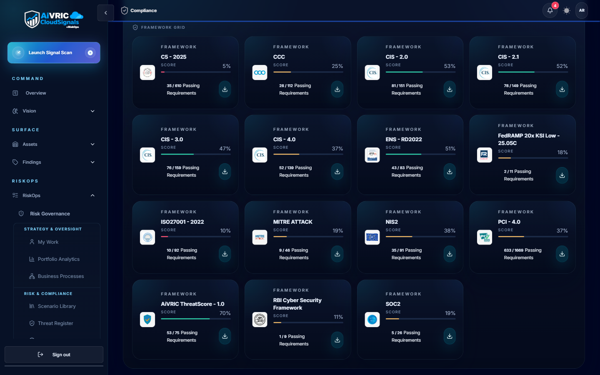
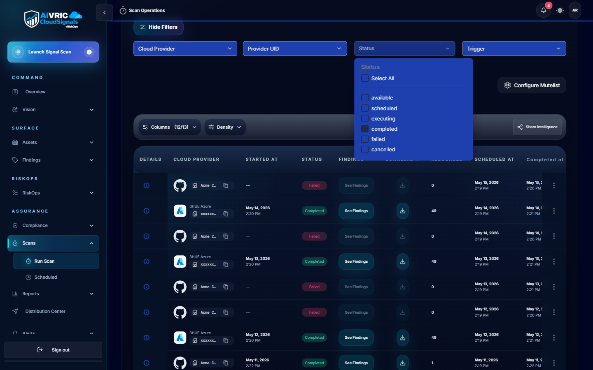
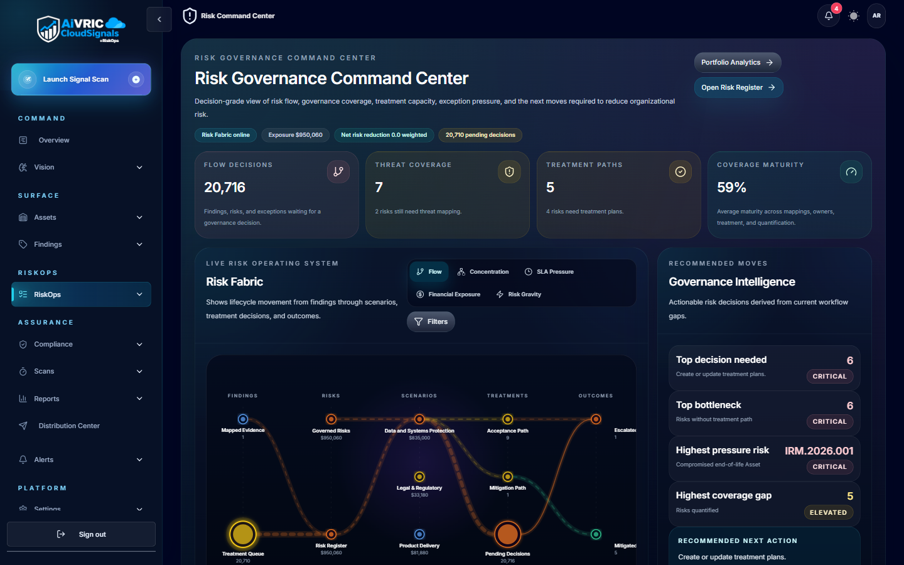
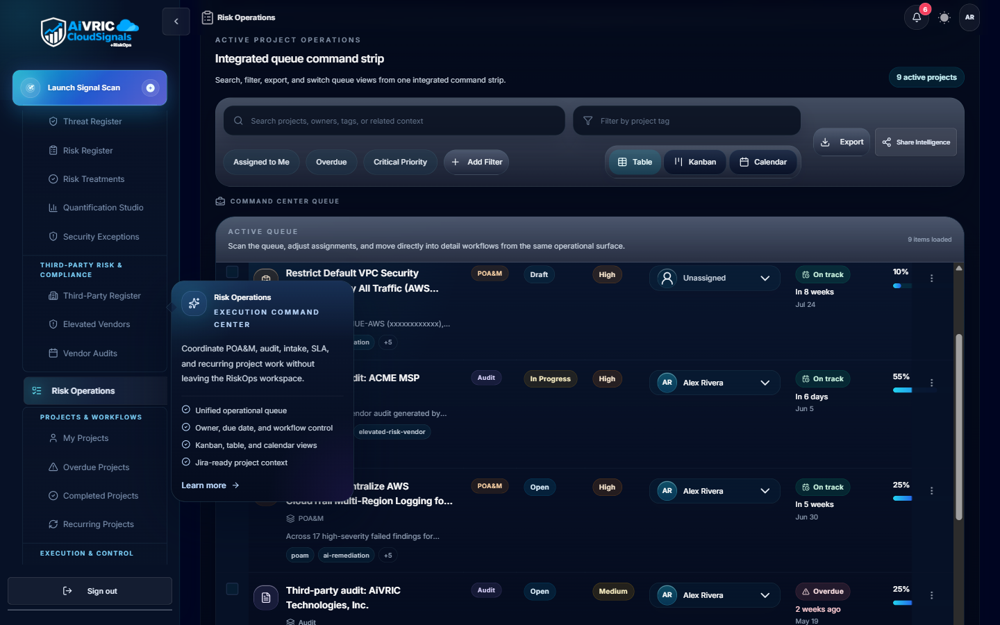

CloudSignals+RiskOps
CloudSignals+RiskOps™ is AiVRIC's continuous cloud security posture and compliance automation engine. It ingests configuration telemetry from your cloud accounts, SaaS platforms, and developer tooling, then continuously maps findings to compliance frameworks, scores risk, and surfaces prioritized remediation guidance — all updated every 24 hours automatically.
How it works
Connect a provider
Grant read-only access via IAM role, service principal, API key, or kubeconfig. AiVRIC never requires write access for monitoring; remediation roles are opt-in and separately scoped.
Telemetry ingestion
CloudSignals+RiskOps polls your cloud APIs on a scheduled cadence (default: every 24 hours; configurable per connector). Configuration metadata, IAM policies, network rules, and resource settings are collected — no application payload data is ingested.
Policy evaluation
Each collected resource is evaluated against your active policy packs and custom rules. Results are classified by severity (Critical, High, Medium, Low) and tagged to the relevant compliance controls.
Risk scoring & prioritization
Findings are aggregated into a posture score per environment and per framework. The risk engine weights findings by exploitability context, asset criticality, and control coverage gaps.
Remediation & evidence
AI-driven remediation guidance is attached to each finding — including suggested Jira/ServiceNow tickets, compensating controls, and step-by-step fix instructions. Every decision is logged for auditors.


Supported providers
CloudSignals+RiskOps supports the following cloud and SaaS providers. Click any to jump to the connector setup guide.
Compliance framework mapping
CloudSignals+RiskOps continuously maps your posture findings to the following frameworks. Evidence is captured automatically, so you always have an up-to-date audit trail.
| Framework | Coverage | Evidence output |
|---|---|---|
| SOC 2 Type II (TSC) | All five Trust Service Criteria: Security, Availability, Processing Integrity, Confidentiality, Privacy. | Control status dashboard, exportable evidence bundle for assessors. |
| PCI DSS v4.0 | Network segmentation, access control, logging, vulnerability management, and encryption requirements. | Control mapping report; ROC evidence export template included. |
| ISO/IEC 27001:2022 | Annex A controls mapped to cloud configuration and identity posture checks. | ISMS continuous monitoring report; nonconformity register with risk ratings. |
| CMMC Level 2 | 110 NIST SP 800-171 practices mapped to cloud and M365 configurations. | POA&M template auto-populated with open findings and remediation status. |
| CIS Benchmarks | Level 1 and Level 2 hardening checks for AWS, Azure, GCP, Kubernetes, and M365. | Per-resource pass/fail with remediation steps. |
| NIST CSF 2.0 | Identify, Protect, Detect, Respond, Recover functions mapped to posture findings. | Function-level heatmap and gap report. |

Scan scheduling
Scheduled scans
Default cadence is every 24 hours per connected provider. Configure scan windows to avoid peak traffic periods or align with change-freeze policies in Settings > Scheduling & Scan Windows.
On-demand scans
Trigger a scan at any time from the provider card in Settings, or via the API. Use this after infrastructure changes to get immediate posture feedback.
Single-run mode
Select Run a single scan at connection time to perform a one-off audit without enabling the recurring schedule. Useful for proof-of-concept assessments.
Policy & rule configuration
- Policy packs: Pre-built control packs for each supported framework. Enable with one click; customizable thresholds available.
- Custom rules: Write your own checks using the rule builder or import as code. Rules support JSON/YAML templates.
- Modes: Monitor (alert only), Enforce (auto-remediate where supported), or Dry-run (preview changes before applying).
- Suppression: Mark accepted risks with owner, justification, and expiry. Suppressed findings appear in the audit log with full context.
- Rule versioning: All policy changes are versioned and attributable. Rollback available from the Settings history view.
- API management: Manage rules as code via the Policy API; integrate with your IaC pipelines for GitOps-style governance.

Analytics & dashboards
Posture overview
Environment-level security score with trend lines. Compare providers side-by-side and filter by severity, framework, or resource type.
Custom views
Pin findings by owner, team, or business unit. Build views that surface what each stakeholder needs without exposing unrelated findings.
MTTR tracking
Track mean time to remediation per finding category and team. Use this data for quarterly posture reviews and board-level reporting.
Scheduled reports
Generate weekly or monthly executive summaries. Schedule delivery to email or Slack/Teams with a single-click from the Reports panel.


Alerts & notifications
| Channel | Setup | Trigger options |
|---|---|---|
| Slack | Install the AiVRIC Slack app and map channels to severity levels or workspaces. | New Critical/High finding, posture score drop, scan completion, policy change. |
| Microsoft Teams | Add the AiVRIC Teams connector via the Teams admin center or channel settings. | Same trigger options as Slack; supports adaptive card formatting. |
| Configure recipients per workspace in Settings > Notifications. | Digest (daily/weekly) or real-time per-finding alerts. | |
| Jira | OAuth connection to your Jira instance; map projects to AiVRIC workspaces. | Auto-create tickets on new High/Critical findings; sync status back on remediation. |
| ServiceNow | REST API integration; configure incident priority mapping in Settings > Ticketing. | Auto-create incidents; bidirectional status sync. |
| Webhook | Register any HTTPS endpoint to receive CloudSignals+RiskOps event payloads. | Fully configurable per event type. |
SIEM & SOAR integration
Splunk
Forward findings and audit events to Splunk via the AiVRIC Add-on. Pre-built dashboards and correlation searches are included. Configure the Splunk HTTP Event Collector (HEC) endpoint in Settings > Integrations.
Microsoft Sentinel
Connect via the AiVRIC Sentinel data connector. Findings are mapped to the Azure Sentinel schema and surfaced as Security Alerts. Includes sample analytic rules and workbooks.
Generic SIEM (CEF/JSON)
Export findings as CEF syslog or JSON via the Findings API. Compatible with QRadar, ArcSight, Elastic, and any platform that supports structured log ingestion.


API & automation
- REST API: Full programmatic access to findings, policies, workspaces, and connector status. API keys scoped per service account with expiration.
- Rate limits: Default 1,000 requests/minute per key. Contact support for higher limits on enterprise plans.
- Authentication: Bearer token; tokens generated in Settings > API Keys with configurable TTL and IP allowlists.
- Sample scripts: Terraform, Python, and Bash automation recipes are available in the AiVRIC documentation library.
- Webhooks: Push-based event delivery for real-time pipeline integration.
- OpenAPI spec: Download the full OpenAPI 3.0 spec from Settings > API to generate client SDKs in any language.

Exporting reports & evidence
Framework evidence bundles
Generate a packaged evidence export for SOC 2, PCI DSS, or ISO 27001 assessors. Includes control status, supporting screenshots, and a findings summary with pass/fail counts.
Quarterly posture reviews
Use the Sample Quarterly Posture Review template to produce executive-ready presentations showing trend data, remediation velocity, and open risk items.
CSV/JSON export
Export any findings view as CSV or JSON directly from the Findings panel. Use the Findings API for automated exports into your BI or GRC tooling.

